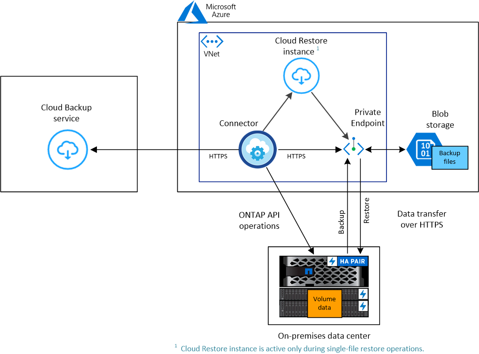
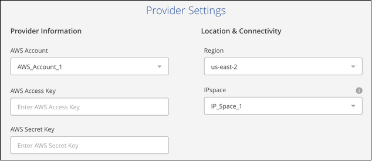
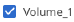

オンプレミスの ONTAP データをパブリッククラウドにバックアップする
オンプレミスの ONTAP システムからパブリッククラウドの低コストのオブジェクトストレージへのデータのバックアップを開始するには、いくつかの手順を実行します。これには、 Amazon S3 、 Azure Blob 、 Google Cloud Storage 上でのバックアップファイルの作成が含まれます。
NetApp StorageGRID システムを使用しており、バックアップを作成する場合は、「方法」を参照してください "オンプレミスの ONTAP データをプライベートクラウドにバックアップ"。
- ヒント
-
ほとんどの場合、 Cloud Manager を使用してすべてのバックアップおよびリストア処理を実行します。ただし、 ONTAP 9.9.1 以降では、 ONTAP System Manager を使用して、オンプレミスの ONTAP クラスタのボリュームバックアップ処理を開始できます。 "Cloud Backup を使用してボリュームをクラウドにバックアップする方法については、 System Manager の説明を参照してください。"
2021 年 1 月にリリースされたベータ版の機能により、バックアップされたボリュームに対して、オンプレミスシステムからコンプライアンススキャンを実行できます。通常、コンプライアンススキャンでは最大 1TB のデータを解放し、サービスのコストは 1TB を超えるデータに対して適用されます。オンプレミスボリュームに Backup と Data Sense を組み合わせると、オンプレミスボリュームでのスキャンコストは無料になります。詳細については、こちらをご覧ください "クラウドデータの意味" ビジネスアプリケーションとクラウド環境のプライバシーを確保できます。
クイックスタート
これらの手順を実行すると、すぐに作業を開始できます。また、残りのセクションまでスクロールして詳細を確認することもできます。
構成がサポートされていることを確認します
-
オンプレミスクラスタを検出し、 Cloud Manager の作業環境に追加しておきます。を参照してください "ONTAP クラスタの検出" を参照してください。
-
クラスタで ONTAP 9.7P5 以降が実行されています。
-
クラスタには SnapMirror ライセンスがあり、 PREM または Data Protection Bundle に含まれています。
-
-
に登録しておきます "Azure"、 "AWS"または "Google" Cloud Manager Marketplace のバックアップ製品またはを購入済みである "アクティブ化されます" NetApp の Cloud Backup BYOL ライセンス。
-
バックアップを格納するオブジェクトストレージスペース用の有効なクラウドプロバイダサブスクリプションが必要です。
-
AWS と GCP については、 ONTAP クラスタがデータをバックアップできるように、アクセスキーと必要な権限を持つアカウントが必要です。
システムで Cloud Backup を有効にします
作業環境を選択し、右パネルの [ バックアップとコンプライアンス ] サービスの横にある [*Enable] をクリックして、セットアップ・ウィザードに従います。
ボタンを示すスクリーンショット。"]
クラウドプロバイダを選択し、プロバイダの詳細を入力します
プロバイダを選択し、プロバイダの詳細を入力します。また、ボリュームが配置されている ONTAP クラスタ内の IPspace を指定する必要があります。
バックアップポリシーを定義
デフォルトポリシーでは、毎日ボリュームがバックアップされ、各ボリュームの最新の 30 個のバックアップコピーが保持されます。日単位、週単位、または月単位のバックアップに変更するか、システム定義のポリシーの中からオプションを追加するものを 1 つ選択します。保持するバックアップコピーの数を変更することもできます。
バックアップするボリュームを選択します
クラスタからバックアップするボリュームを特定します。
バックアップしたボリュームで Compliance スキャンをアクティブ化（オプション）
クラウドにバックアップされているボリュームを Cloud Data Sense スキャンでスキャンするかどうかを選択します。
必要に応じて、データをリストアします
バックアップ全体を新しいボリュームにリストアするか、またはバックアップから既存のボリュームに個々のファイルをリストアするかを選択します。同じクラウドプロバイダを使用している Cloud Volumes ONTAP システムやオンプレミスの ONTAP システムにデータをリストアできます。
を参照してください "バックアップファイルからのボリュームデータのリストア" を参照してください。
概要図
次の図は、オンプレミスの ONTAP システムをオブジェクトストレージにバックアップする場合と、それらの間の接続を準備する場合の各コンポーネントを示しています。
-
Amazon S3 構成： *

クラウドにクラウドリストアインスタンスが導入されている場合、クラウドリストアインスタンスはコネクタと同じサブネットに配置されます。
-
Azure Blob Configuration ： *

クラウドにクラウドリストアインスタンスが導入されている場合、クラウドリストアインスタンスはコネクタと同じサブネットに配置されます。
-
Google Cloud Storage の構成： *
シングルファイルのリストアは現在 GCP でサポートされていないため、 Cloud Restore インスタンスはこの図には示されていません。
要件
オンプレミスボリュームをオブジェクトストレージにバックアップする前に、次の要件を確認し、サポートされている構成であることを確認してください。
ONTAP クラスタの準備
ボリュームデータのバックアップを開始する前に、 Cloud Manager でオンプレミスの ONTAP クラスタを検出する必要があります。
- ONTAP の要件
-
-
ONTAP 9.7P5 以降
-
SnapMirror ライセンス（ PREM または Data Protection Bundle に含まれます）。
方法を参照してください "クラスタライセンスを管理します"。
-
時間とタイムゾーンが正しく設定されている。
方法を参照してください "クラスタ時間を設定します"。
-
- クラスタネットワークの要件
-
-
ONTAP クラスタが、クラウドオブジェクトストレージへのポート 443 経由の HTTPS 接続を開始します。
ONTAP は、オブジェクトストレージとの間でデータの読み取りと書き込みを行います。オブジェクトストレージが開始されることはなく、応答するだけです。
-
コネクタからのインバウンド接続が必要です。この接続は、使用するオブジェクトストレージプロバイダに応じて、 AWS VPC 、 Azure VNet 、または Google Cloud Platform VPC に配置できます。
-
クラスタ間 LIF は、バックアップ対象のボリュームをホストする各 ONTAP ノードに必要です。LIF は、 ONTAP がオブジェクトストレージへの接続に使用する IPspace に関連付けられている必要があります。 "IPspace の詳細については、こちらをご覧ください"。
Cloud Backup をセットアップすると、 IPspace で使用するように求められます。各 LIF を関連付ける IPspace を選択する必要があります。これは、「デフォルト」の IPspace または作成したカスタム IPspace です。
-
ノードとクラスタ間 LIF からインターネットにアクセスできます。
-
ボリュームが配置されている Storage VM に DNS サーバが設定されている。
方法を参照してください "SVM 用に DNS サービスを設定"。
-
必要に応じてファイアウォールルールを更新し、 ONTAP からオブジェクトストレージへのポート 443 経由の Cloud Backup Service 接続と、ポート 53 （ TCP / UDP ）経由での Storage VM から DNS サーバへの名前解決トラフィックを許可します。
-
コネクタの作成または切り替え
コネクタは、データをクラウドにバックアップするために必要です。コネクタは、デスティネーションオブジェクトストレージと同じクラウドプロバイダになければなりません。たとえば、 AWS S3 にデータをバックアップする場合は、 AWS VPC 内のコネクタを使用する必要があります。オンプレミスに導入されているコネクタは使用できません。新しいコネクターを作成するか、現在選択されているコネクターが正しいプロバイダーにあることを確認する必要があります。
コネクタのネットワークを準備しています
コネクタに必要なネットワーク接続があることを確認します。
-
コネクタが取り付けられているネットワークで次の接続が有効になっていることを確認します。
-
Cloud Backup Service へのアウトバウンドインターネット接続 ポート 443 （ HTTPS ）
-
ポート 443 経由でのオブジェクトストレージ（ S3 、 Blob 、 Google ）への HTTPS 接続
-
ONTAP クラスタへのポート 443 経由の HTTPS 接続
-
-
オブジェクトストレージのエンドポイントを有効にします。
-
for AWS ： S3 に対して VPC エンドポイントを有効にします。ONTAP クラスタから VPC への Direct Connect または VPN 接続が確立されている環境で、コネクタと S3 の間の通信を AWS 内部ネットワークのままにする場合は、この接続が必要です。
-
Azure の場合： Azure ストレージへの VNet プライベートエンドポイントを有効化これは、 ONTAP クラスタから VNet への ExpressRoute または VPN 接続があり、コネクタと BLOB ストレージ間の通信を仮想プライベートネットワークのままにする場合に必要です。
-
Google の場合：サービスコネクタを配置するサブネットで Google プライベートアクセスを有効にします。 "プライベート Google アクセス" ONTAP クラスタから VPC への直接接続が確立されており、 Connector と Google Cloud Storage 間の通信を仮想プライベートネットワークのままにする場合は、が必要です。
プライベート Google アクセスは、内部（プライベート） IP アドレスのみ（外部 IP アドレスは使用しない）を持つ VM インスタンスで機能します。
-
サポートされている地域
オンプレミスシステムからパブリックシステムへのバックアップを作成できます すべての地域でクラウドを利用できます "Cloud Volumes ONTAP がサポートされている場合"。サービスのセットアップ時にバックアップを保存するリージョンを指定します。
ライセンス要件
Cloud Backup PAYGO ライセンスの場合は、へのサブスクリプションが必要です "Azure"、 "AWS"または "Google" Cloud Backup を有効にする前に、 Cloud Manager Marketplace のバックアップサービスを利用できます。Cloud Backup の請求は、このサブスクリプションを通じて行われます。
Cloud Backup BYOL ライセンスの場合は、サブスクリプションは必要ありません。シリアル番号はネットアップから提供される必要があります。この番号を使用すると、ライセンスの期間と容量にサービスを使用できます。を参照してください "バックアップ BYOL ライセンスの管理"。
また、バックアップを格納するオブジェクトストレージスペースについて、クラウドプロバイダからのサブスクリプションが必要になります。
バックアップのための Amazon S3 の準備
Amazon S3 を使用している場合は、 Cloud Manager が S3 バケットにアクセスするための権限を設定する必要があります。また、オンプレミスの ONTAP クラスタが S3 バケットにアクセスできるように権限を設定する必要があります。
-
最新のから次の S3 権限を指定します "Cloud Manager ポリシー"）を作成して、 Cloud Manager に権限を付与する IAM ロールに付与します。
{ "Sid": "backupPolicy", "Effect": "Allow", "Action": [ "s3:DeleteBucket", "s3:GetLifecycleConfiguration", "s3:PutLifecycleConfiguration", "s3:PutBucketTagging", "s3:ListBucketVersions", "s3:GetObject", "s3:ListBucket", "s3:ListAllMyBuckets", "s3:GetBucketTagging", "s3:GetBucketLocation", "s3:GetBucketPolicyStatus", "s3:GetBucketPublicAccessBlock", "s3:GetBucketAcl", "s3:GetBucketPolicy", "s3:PutBucketPublicAccessBlock" ], "Resource": [ "arn:aws:s3:::netapp-backup-*" ] }, -
ONTAP クラスタから S3 にデータをバックアップできるように、 IAM ユーザに次の権限を付与します。
"s3:ListAllMyBuckets", "s3:ListBucket", "s3:GetBucketLocation", "s3:GetObject", "s3:PutObject", "s3:DeleteObject"を参照してください "AWS ドキュメント：「 Creating a Role to Delegate Permissions to an IAM User" を参照してください。
-
Cloud Restore インスタンスに次の権限を指定します。
"Action": [ "ec2:DescribeInstanceTypeOfferings", "ec2:StartInstances", "ec2:StopInstances", "ec2:TerminateInstances" ], -
仮想ネットワークまたは物理ネットワークでインターネットアクセスにプロキシサーバを使用している場合は、 Cloud Restore インスタンスがアウトバウンドのインターネットアクセスを使用して次のエンドポイントに接続していることを確認してください。
エンドポイント 目的 クラウドリストアインスタンス AMI 用の CentOS パッケージ。
¥ http://cloudmanagerinfraprod.azurecr.io ¥ https://cloudmanagerinfraprod.azurecr.io
Cloud Restore Instance のイメージリポジトリ。
-
アクセスキーを作成または検索します。
Cloud Backup が ONTAP クラスタにアクセスキーを渡します。クレデンシャルは Cloud Backup Service には保存されません。
を参照してください "AWS ドキュメント：「 Managing Access Keys for IAM Users" を参照してください。
バックアップ用に Azure BLOB ストレージを準備しています
Cloud Restore 仮想マシンには、アウトバウンドのインターネットアクセスが必要です。仮想ネットワークまたは物理ネットワークでインターネットアクセスにプロキシサーバを使用している場合は、インスタンスがアウトバウンドのインターネットアクセスを使用して次のエンドポイントに接続していることを確認してください。
| エンドポイント | 目的 |
|---|---|
¥ http://olcentgbl.trafficmanager.net ¥ https://olcentgbl.trafficmanager.net |
Cloud Restore 仮想マシン用の CentOS パッケージが用意されています。 |
¥ http://cloudmanagerinfraprod.azurecr.io ¥ https://cloudmanagerinfraprod.azurecr.io |
Cloud Restore 仮想マシンのイメージリポジトリ。 |
Google Cloud Storage でバックアップを準備しています
バックアップを設定するときは、 Storage Admin の権限があるサービスアカウントにストレージアクセスキーを指定する必要があります。サービスアカウントを使用すると、 Cloud Backup でバックアップの格納に使用する Cloud Storage バケットを認証してアクセスできます。キーは、 Google Cloud Storage がリクエストを発行しているユーザーを認識できるようにするために必要です。
-
に進みます "GCP Storage Settings （ GCP ストレージ設定）" サービスアカウントのアクセスキーを作成します。
-
プロジェクトを選択し、 * 互換性 * をクリックします。まだ有効にしていない場合は、 [ 相互運用アクセスを有効にする *] をクリックします。
-
[ サービスアカウントのアクセスキー *] で、 [ サービスアカウントのキーの作成 *] をクリックし、作成したサービスアカウントを選択して、 [ キーの作成 *] をクリックします。
Cloud Backup でキーを入力する必要があるのは、あとでバックアップサービスを設定するときです。
-
Cloud Backup を有効にしています
Cloud Backup は、オンプレミスの作業環境からいつでも直接有効にできます。
-
キャンバスから作業環境を選択し、右パネルのバックアップとコンプライアンスサービスの横にある * 有効化 * をクリックします。
ボタンを示すスクリーンショット。"]
-
プロバイダを選択し、 * 次へ * をクリックして、プロバイダの詳細を入力します。
-
Azure の場合は次のように入力します
-
バックアップおよびバックアップを格納する Azure リージョンで使用する Azure サブスクリプション。
-
リソースグループ - 新しいリソースグループを作成することも、を選択して既存のリソースグループを選択することもできます。
-
バックアップするボリュームが配置されている ONTAP クラスタ内の IPspace 。

-
-
AWS の場合は次のように入力します
-
バックアップの格納に使用する AWS アカウント、 AWS Access Key 、および Secret Key 。
-
バックアップを格納する AWS リージョン。
-
バックアップするボリュームが配置されている ONTAP クラスタ内の IPspace 。

-
-
Google の場合、次のように入力します
-
バックアップ用に Google Cloud Storage バケットを作成する Google Cloud Project 。これは、 Cloud Manager が配置されているプロジェクトとは異なる場合があります。（プロジェクトには、事前定義された Storage Admin ロールを持つサービスアカウントが必要です）。
-
バックアップの保存に使用する Google Access Key および Secret Key 。
-
バックアップが保存される Google リージョン。これは、 Cloud Manager が配置されているリージョンとは異なるリージョンにすることもできます。
-
バックアップするボリュームが配置されている ONTAP クラスタ内の IPspace 。
-
-
StorageGRID については、「方法」を参照してください "オンプレミスの ONTAP データをプライベートクラウドにバックアップ"。
この情報は、サービスの開始後は変更できないことに注意してください。
-
-
プロバイダの詳細を入力したら、「 * 次へ * 」をクリックします。
-
[Define Policy] ページで、既存のバックアップスケジュールと保持期間の値を選択するか、新しいバックアップポリシーを定義して、 [ * 次へ * ] をクリックします。
を参照してください "既存のポリシーのリスト"。
-
バックアップするボリュームを選択します。
-
すべてのボリュームをバックアップするには、タイトル行（
 ）。
）。 -
個々のボリュームをバックアップするには、各ボリュームのボックス（）。
-
-
Activate Backup * をクリックすると、ボリュームの初期バックアップの作成が開始されます。
AWS または Azure でバックアップファイルを作成する場合、バックアップされたボリュームで準拠スキャンを実行するかどうかの確認を求められます。Cloud Data Sense スキャンは、バックアップしたボリューム（を除く）で実行すると無料で実行できます "導入した Cloud Data Sense インスタンスのコスト"）。
-
コンプライアンスへ移動 * をクリックして、ボリュームのコンプライアンススキャンをアクティブ化します。（バックアップされたボリュームをスキャンせずに * Close * を選択すると、いつでもスキャンできます "この機能を有効にします" 後でクラウドデータの意味から）
-
Cloud Data Sense のインスタンスがすでに環境に導入されている場合は、バックアップがある各オンプレミスの作業環境でスキャンするボリュームを設定ページで選択するように指示されます。を参照してください "ボリュームを選択する方法"。
-
クラウドデータセンスが導入されていない場合は、コンプライアンスページが表示されます。コンプライアンスページでは、クラウドまたは社内にコンプライアンスを導入できます。クラウドに導入することを強く推奨します。実行します "こちらをご覧ください" を参照してください。
Compliance の導入が完了したら、上記の手順でスキャンするボリュームを選択できます。
-
Cloud Backup は、オンプレミスの ONTAP システムからボリュームをバックアップします。必要に応じて、バックアップされたボリュームに対してコンプライアンススキャンを実行します。
可能です "ボリュームのバックアップを開始および停止したり、バックアップを変更したりできます スケジュール" また、次のことも可能です "ボリューム全体または個々のファイルをバックアップファイルからリストアする"。
また可能です "コンプライアンススキャンの結果を表示します" また、データコンテキストを理解し、組織内の機密データを特定するのに役立つ、クラウドデータセンスのその他の機能についても確認します。
| Cloud Backup では、コンプライアンススキャンを開始する前にバックアップの作成を完了する必要があるため、スキャン結果はすぐには使用できません。 |
 GitHub で編集
GitHub で編集